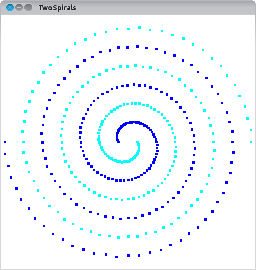
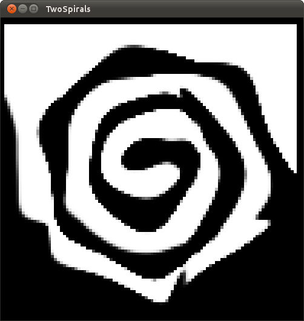

Data Set
This is a classification benchmark which is particularly difficult for gradient descent optimization.
The two spirals data set was developed by Lang and Witbrock [1]. The data set we use here is taken from the CMU Neural Networks Benchmarks. It consists of 193 training instances and 193 test instances located on a 2D surface. They belong to one of two spirals:

Network Architecture
It is possible to solve this problem with one or two hidden layers. But architectures with two hidden layers need less connections and can learn faster. The architecture we chose here is 2-20-20-1 with bias. You can solve this problem with different compression setups. the smallest number of parameters that reliably solves this problem is 3-6-1 with orthogonal cosine functions. All activation functions are tangens hyperbolicus (MLP::TANH). The best optimization algorithm is Levenberq-Marquardt (MLP::BATCH_LMA).
User Interface
You can use the following keys to control the program:
- Q: Toggle display of training set
- W: Toggle display of test set
- E: Toggle display of predicted classes for the whole surface
- R: Toggle display of smooth prediction transitions (black+white or grey)
- A: Start visible training
- Escape: Quit application.
A trained model could make these predictions:

References
[1] Kevin J. Lang and Michael J. Witbrock: Learning to Tell Two Spirals Apart. In: Proceedings of the 1988 Connectionist Models Summer School,
- ISBN: 0-55860-015-9
Code
Note that you should not use this as an example for good GUI code because it mixes a lot of logic and visualization.
#include <QApplication>
#ifdef PARALLEL_CORES
#include <omp.h>
#endif
int main(
int argc,
char** argv)
{
OpenANNLibraryInfo::print();
QApplication app(argc, argv);
Eigen::MatrixXd Xtr, Ytr, Xte, Yte;
visual.show();
visual.resize(500, 500);
return app.exec();
}
#ifndef TWO_SPIRALS_VISUALIZATION_H_
#define TWO_SPIRALS_VISUALIZATION_H_
#include <Eigen/Dense>
#include <QGLWidget>
#include <QKeyEvent>
#include <QMutex>
using namespace OpenANN;
{
Eigen::MatrixXd in, out;
public:
virtual int samples() { return dataSet.samples(); }
virtual int inputs() { return dataSet.inputs(); }
virtual int outputs() { return dataSet.outputs(); }
virtual Eigen::VectorXd& getInstance(int i) { return dataSet.getInstance(i); }
virtual Eigen::VectorXd& getTarget(int i) { return dataSet.getTarget(i); }
virtual void finishIteration(
Learner& learner);
};
{
Q_OBJECT
int width, height;
QMutex classesMutex;
double classes[100][100];
bool showTraining, showTest, showPrediction, showSmooth;
public:
const Eigen::MatrixXd& testInput, const Eigen::MatrixXd& testOutput);
void predictClass(
int x,
int y,
double predictedClass);
protected:
virtual void initializeGL();
virtual void resizeGL(int width, int height);
virtual void paintGL();
void paintPrediction();
void paintDataSet(bool training);
virtual void keyPressEvent(QKeyEvent* keyEvent);
signals:
void updatedData();
};
#endif // TWO_SPIRALS_VISUALIZATION_H_
#include <GL/glu.h>
#include <QApplication>
const Eigen::MatrixXd& trainingInput,
const Eigen::MatrixXd& trainingOutput,
const Eigen::MatrixXd& testInput,
const Eigen::MatrixXd& testOutput)
: width(500), height(500),
trainingSet(trainingInput, trainingOutput),
testSet(testInput, testOutput), showTraining(true), showTest(true),
showPrediction(true), showSmooth(true), net(new Net)
{
std::memset(classes, 0, sizeof(double) * 100 * 100);
trainingSet.setVisualization(this);
QObject::connect(this, SIGNAL(updatedData()), this, SLOT(repaint()));
.fullyConnectedLayer(20,
TANH)
.trainingSet(trainingSet);
}
{
}
{
classesMutex.lock();
classes[x][
y] = predictedClass;
classesMutex.unlock();
if(x == 99 && y == 99)
emit updatedData();
}
{
glEnable(GL_DEPTH_TEST);
glEnable(GL_LINE_SMOOTH);
glHint(GL_LINE_SMOOTH_HINT, GL_NICEST);
glEnable(GL_BLEND);
glBlendFunc(GL_SRC_ALPHA, GL_ONE_MINUS_SRC_ALPHA);
glDepthFunc(GL_LEQUAL);
glHint(GL_PERSPECTIVE_CORRECTION_HINT, GL_NICEST);
glShadeModel(GL_SMOOTH);
glClearColor(0.0, 0.0, 0.0, 0.0);
glPointSize(5.0);
}
{
this->width = width;
this->height = height;
glViewport(0, 0, width, height);
glMatrixMode(GL_PROJECTION);
glLoadIdentity();
gluPerspective(45.0f, (float) width / (float) height, 1.0f, 100.0f);
glMatrixMode(GL_MODELVIEW);
glClearColor(0.0, 0.0, 0.0, 0.0);
glClearDepth(1.0f);
}
{
glClear(GL_COLOR_BUFFER_BIT | GL_DEPTH_BUFFER_BIT);
glLoadIdentity();
glTranslatef(-0.5f, -0.5f, -1.25f);
if(showPrediction)
paintPrediction();
if(showTraining)
paintDataSet(true);
if(showTest)
paintDataSet(false);
glFlush();
}
{
for(int x = 0; x < 100; x++)
{
for(int y = 0; y < 100; y++)
{
classesMutex.lock();
float c;
Eigen::VectorXd v(2);
v(0) = (double) x / 100.0f;
v(1) = (double) y / 100.0f;
if(showSmooth)
c = classes[x][
y] / 2.0f + 0.5f;
else
c = classes[x][
y] < 0.0 ? 0.0f : 1.0f;
classesMutex.unlock();
glColor3f(c, c, c);
float minX = (float) x / 100.0f - 0.005;
float maxX = minX + 0.01;
float minY = (float) y / 100.0f - 0.005;
float maxY = minY + 0.01;
glBegin(GL_QUADS);
glVertex2f(minX, maxY);
glVertex2f(maxX, maxY);
glVertex2f(maxX, minY);
glVertex2f(minX, minY);
glEnd();
}
}
}
{
glBegin(GL_POINTS);
for(
int n = 0; n < dataSet.
samples(); n++)
{
glColor3f(1.0f, 0.0f, 0.0f);
else
glColor3f(1.0f, 1.0f, 0.0f);
}
glEnd();
}
{
switch(keyEvent->key())
{
case Qt::Key_Q:
showTraining = !showTraining;
update();
break;
case Qt::Key_W:
showTest = !showTest;
update();
break;
case Qt::Key_E:
showPrediction = !showPrediction;
update();
break;
case Qt::Key_R:
showSmooth = !showSmooth;
update();
break;
case Qt::Key_A:
break;
case Qt::Key_Escape:
QApplication::quit();
break;
default:
QGLWidget::keyPressEvent(keyEvent);
break;
}
}
: in(inputs), out(outputs), dataSet(&this->in, &this->out), visualization(0)
{
}
{
this->visualization = visualization;
}
{
if(visualization)
{
for(int x = 0; x < 100; x++)
{
for(int y = 0; y < 100; y++)
{
Eigen::VectorXd in(2);
in << (double) x / 100.0, (double) y / 100.0;
Eigen::VectorXd out = learner(in);
visualization->predictClass(x, y, out(0, 0));
}
}
}
}


 1.8.3.1
1.8.3.1